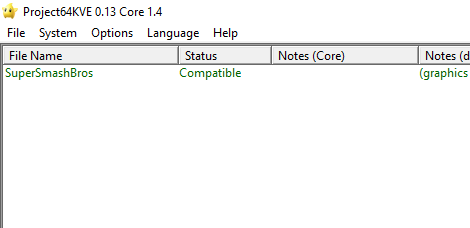

<!DOCTYPE html>
<html>
<head>
  <meta charset="UTF-8">
  <meta name="viewport" content="width=device-width, initial-scale=1.0">
  <link rel="stylesheet" href="../../../css/style.css">
  <title>ZAAQ</title>
  <link rel="icon" href="../../../img/icon.ico" type="image/x-icon">
</head>
	
	
</html>


<body>
  <div class="wrapper">
    <header>
      <div class="banner">
        
        <a href="https://www.zaaq.fr">Accueil</a>
            <a href="../../../../ressources/pages/external.html">Sites</a>    
             
            <a href="../../../../ressources/pages/ssb.html">Smash</a>     
            <a href="../../../../ressources/pages/contact.html">Contact</a>
        
      </div>
    </header>

    <div class="container">
      

      <section>
		<p><h2>Comment configurer un émulateur pour jouer en ligne pour jouer à Smash 64</h2></p>
		
			<p>1. Tout d'abord il faut un émulateur, nous allons uttiliser l'émulateur Project 64, mais une version différente intitulé "Projetct64KVE" qui prends en compte un système de serveur en ligne. <a href= "Project64Kve.zip" > Télécharger l'emulateur</a></p>
			<p>2. Il te faut une rom, c'est à dire le fichier du jeu en .n64 .z64 ou .v64. Fais attention d'avoir la même version que la personne avec qui tu souhaites jouer. Si tu comptes jouer avec des inconnus, privilégie la version USA qui est la version universelle.</p>
			<p>3. Après avoir lancé Project64Kve il faut le configurer. Clique sur "Fichiers" puis "Choose roms directory" et choisi le dossier ou tu comptes mettre toutes tes ROM</p>
			
			<div class="ssb64o">
			<h1></h1>
		</div>
			<p>4. Si tout est bien effectué le jeu s'affiche dans la liste, si tu as mis d'autres jeu dans le même dossier ils s'afficherons aussi.</p>
			<div class="ssb64o">
			<h1></h1>

			<p>5. Voilà l'émulateur est configuré comme il le faut <a href="manette.html">Clique ici</a> si tu veux configurer ta manette et <a href="manette.html"> Clique ici</a> si tu veux voir comment fonctionne le online en trouvant une partie</p>
			
		   <p><a href="index.html">Retour</a></p>
      </section>
    </div>

    <footer>
      <p>© 2023 - ZAAQ - ArthurM</p>
    </footer>
  </div>
  <script src="script.js"></script>

</body>
</html>


